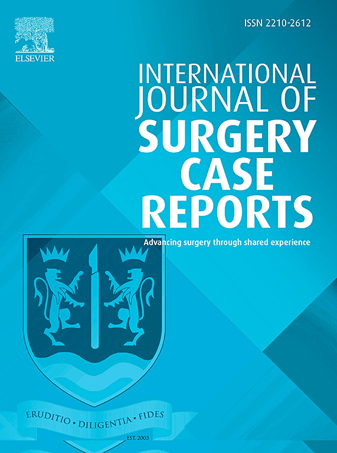

2025
Soheila Aminimoghaddam, Roghayeh Pourali, Mehrsa Shiasi
Successful Pregnancy 4 Years After Liver Transplant for Hepatocellular Carcinoma: A Case Report
Medical Reports
VIEW

2025
Soheila Aminimoghaddam, Niloufar Sarchami, Elahe Ghaderi
Placenta increta mimicking placental site trophoblastic tumor: A rare case report
International Journal of Surgery Case Reports
VIEW
For a full list, have a look at my Google Scholar page.